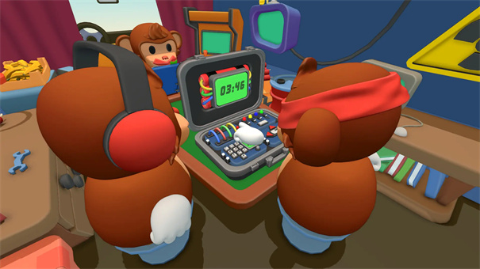

翻遍手册和代码，炸弹猴藏着 5 个官方都不宣传的玩法
大多数人把炸弹猴玩成三个人瞎比划的笑料制造机，其实这款游戏藏着角色轮换、自定义协议、计算外包等五个冷门机制，能直接拉高你的队伍上限。
你以为 BOMBANANA! 就是三只猴子对着一颗炸弹瞎比划、语音频道笑到破音的派对小游戏？没错，这确实是大多数人打开它的方式——它的bombanana官网上能看到完整的商店页介绍，Steam Next Fest 爆红、百万销量、好评如潮，靠的就是"三个感官受限的人凑在一起拆炸弹"这个机制自带的节目效果。
但我把手册翻了三遍、把角色轮换了十几轮之后发现，这款游戏的深度其实远远不止"比划得好不好"。它藏着 5 个官方商店页从来不提、连中文社区也很少有人聊的隐藏玩法，每一个都能直接改变你的游戏体验。
隐藏玩法一：角色轮换不是建议，是解锁长线动力的开关
几乎所有新手小队开局都会默认一个固定分工：手稳的当不见猴（蒙眼拆弹）、逻辑强的当不言猴（查手册做算术）、话多的当不听猴（双向传话）。然后这支队伍会这么玩五局、十局、二十局——直到某天有人说"这游戏玩腻了"，然后集体卸载。
官方其实在手册里藏了一句："正式组队后建议尽早引入轮换制"。这句话太轻了，轻到 90% 的玩家会把它当成"随便玩玩就好"的礼貌性建议。但真的轮换过一次你就知道——固定角色和轮换角色，是两款完全不同的游戏。
为什么？因为每个角色的压力类型根本不是一个维度的：
- 不见猴是纯执行压力：你看不见炸弹，每一秒都在等指令，耳朵里只有"红色按钮！左边！不对不对！"的嘶吼，手心冒汗但必须稳住不抢拍；
- 不言猴是纯脑力压力：你有手册但说不出话，计算模块的算术题要心算、解密模块的符号要记清楚，查错一个数字全队爆炸，但你只能用手势传递结果——不能急、不能说、不能甩锅；
- 不听猴是纯多线程压力：你同时对着不言猴的手势解码、对着不见猴的指令编码，两边都是实时流，任何一个环节慢半拍就是整条链卡住。
只玩一个角色，你永远只能摸到整个机制的三分之一。轮换之后最明显的变化有两个：一是同理心暴涨——之前你总嫌不见猴手笨，等你自己蒙着眼被指挥十次之后，你会发现原来"左边"这个指令在炸弹的坐标系里根本不是一个明确的方向；二是队伍协议会自然进化——三个人都坐过三把椅子，谁在哪个环节最容易出错、哪个手势容易被误解，一眼就能看出来。
什么时候开始轮换最合适？打完前三局、把开拆前的约定清单走熟之后就可以。推荐的轮换顺序是顺时针：不见猴 → 不言猴 → 不听猴 → 不见猴，这样每个人都能完整走过一轮信息链的每个节点。
隐藏玩法二：计算模块可以"外包"给不听猴
这是不言猴（哑巴军师）最需要知道的一个技巧——几乎所有新队伍都会默认"计算模块归不言猴管"，因为手册就在不言猴手里，但翻bombanana文档就知道，这个分工其实完全可以灵活调整。如果你队伍里有人对数学有生理性恐惧，或者不言猴同时要查手册又要做算术忙不过来，计算模块完全可以甩给不听猴口算。
我第一次发现这个是因为队伍里的不言猴那天状态特别差，连两位数加法都算错。不听猴急了说"你把数传给我，我心算，算完用手势拍回来"——结果那局不仅没炸，反而比之前所有局都快。原因很简单：不听猴本来就是双向传译，他接收数字（来自手册）和输出结果（拍给不言猴）都是他本职工作的一部分，多做一步心算根本不增加信息传递的负担。
具体怎么操作？很简单。不言猴查到计算模块的公式和输入参数之后，用手势把数字传给不听猴——比如三根手指晃一下 = 3、两根手指指一下手腕 = 2，这些都是你们之前约定好的黑话。不听猴心算完成之后，用手势把结果拍回给不言猴，不言猴再查手册确认下一步操作。
唯一要注意的是：外包只能包算术结果，不能包操作决策。到底该切哪根线、按哪个按钮，还是得不言猴拿着手册做决定。否则等于让不听猴同时干两份活，反而更乱。
隐藏玩法三：自定义沟通协议 = 游戏自带的隐藏"Mod 工具"
官方在商店页上写了一句"游戏不提供任何内置沟通系统"，大多数人把这句话理解成"我们做不来内置系统所以偷懒"。但实际上——这是整个游戏最聪明的设计，它等于给每个队伍留了一个免费的、无限扩展的内容创造器。
每支队伍都可以自己发明专属的沟通协议：手势库、黑话库、编码规则，甚至包括"什么时候谁先说话"这种流程约定。我见过的协议有：
- 手势编码：比一个"OK"不是"好的"，是"红色按钮"；比一个"嘘"不是"安静"，是"停止操作"；
- 黑话库：不说"C 线"说"第三条彩色的"，不说"倒计时 30 秒"说"快喝口水"；
- 流程约定：不见猴每次操作前必须先报"收到"，不听猴每次收到手势必须先复述一遍才往下传，这样任何一个环节断了立刻就能发现；
- 紧急暗号：专门约定一个手势表示"我没看懂，重发"，比乱猜强一百倍。
这些协议不是写在某个地方的固定规则，而是玩出来的。第一次炸在手势误解上？那下次这个手势就换一个。第二次炸在没确认就操作？那下次加一个"收到-确认-执行"三步流程。
玩了十几轮之后，你会发现 BOMBANANA! 的长线动力根本不是"新关卡"或者"新炸弹"——而是"这次能不能把那个黑话传得更快"。手册上的 30 个关卡是固定的，但你的队伍协议每一局都在进化，这才是为什么有人能把同一关玩一百遍还不腻。
隐藏玩法四：线下同屏才是这个游戏的"完全体"
Steam 商店页的截图全是三个游戏窗口各占一边的线上联机画面，几乎没人提线下同屏这个选项。但我负责任地说——同一间屋子里摆三台设备、三个人各坐一张椅子、互相能听见对方的笑声和叹气，这才是炸弹猴的最高配置体验。
为什么？
第一，线下绕开了整个语音质量问题。素材里特意提到"耳麦优先于外放 + 收音，回声会让不听猴的手势解读雪上加霜"——线上联机你永远要面对有人麦克风炸了、有人网络卡了、有人忘了开麦这些破事。线下同屏不需要语音聊天软件，三个人抬头就能看见对方的手势，低头就能看自己的屏幕，信息传递的延迟和噪声直接归零。
第二，线下有肢体喜剧的加成。线上你只能听到对方说"我没看懂你比划的是什么"，线下你能看到队友急得站起来、手势越比越夸张、最后干脆从椅子上跳起来——这才是这款游戏的精华。官方甚至把这个做成了彩蛋：三人互动的肢体表现越激烈，游戏里的场景装饰会悄悄变化。
第三，线下可以搞"盲玩"变体。我朋友发明过一个玩法：三个人都把自己的屏幕藏起来，只靠队友的描述来操作。这等于把感官限制翻了三倍，本来是一个人看不见，现在三个人都看不见——玩了五局笑到肚子疼。
线下同屏对硬件要求几乎为零——核显就能跑，硬盘占用才 300MB，三台笔记本凑一块就能开干。与其凑线上开黑等半小时人，不如直接叫朋友来家里，三台电脑排一排。

隐藏玩法五：MAYDAY 更新藏了全新场景和角色自定义——很多人还没发现
游戏发售刚满一个月，2026 年 10 月 9 日刚上线了首个大版本更新「MAYDAY」，直接去bombanana下载拿最新版本就行。官方更新公告写得很克制——"新增一个带独立威胁与互动要素的场景、扩展角色自定义、平衡与体验优化"。但真正进去玩了之后发现，这个更新藏的东西比商店页写的多得多。
首先是新场景。原来的关卡都在一节固定的车厢里，MAYDAY 加了一个完全不同的空间——一个会晃动的船舱。船舱的晃动不是装饰，会真实影响不听猴的手势判断：船晃的时候，同一个手势在屏幕上的位置会上下偏移，你以为对方比的是"上"，其实是"中"。这个小改动直接让所有老队伍需要重新校准他们的手势库。
然后是角色自定义的扩展。原来的角色皮肤只有几款基础款，MAYDAY 加了可以自定义头饰、手势颜色包，甚至可以给你的角色起一个队内专属的名字。最有意思的是——自定义内容可以跨角色同步，你给不言猴配的那个黄色发光的手环，换到不见猴身上也能看到。这等于给队伍协议又加了一个视觉层：可以约定"戴蓝色头饰的人当首轮不言猴"。
最后是一个被所有人忽略的体验优化：不言猴查手册的界面加了一个"最近查看"标签。之前查手册翻来翻去很容易迷路，现在能快速回到上一个查过的模块。别小看这个改动——在倒计时压到 30 秒的时候，这个标签能省下至少 5 秒，而 5 秒在炸弹猴里就是炸与不炸的区别。
最后说一个我踩过的坑
上面说的五个玩法都是"往好里用"的，但还有一个隐藏功能我踩过坑：轮换太频繁反而会掉胜率。
我之前犯过一个错——为了体验不同角色，每赢一局就轮换一次。结果连续五局全炸，全队陷入"我还没熟悉这个角色就又被换掉了"的混乱。正确的做法是每次轮换后至少固定玩三局，让每个人在新角色上跑一遍完整的流程，确认这个角色的核心压力点在哪里，再换回去。
总结下来，炸弹猴真正的隐藏不是某个作弊按钮或者隐藏关卡，而是你和队友一起造出来的那些东西：你们的手势库、你们的黑话、你们的流程约定、你们坐在同一间屋子里互相拍肩膀的那些瞬间。它看起来是个三个人瞎比划的派对小游戏，但把这些机制玩透之后，它能变成一支队伍独有的、别人复制不走的记忆。
翻遍手册翻不出这些，但玩够十轮、坐过三把椅子、经历过一次线下同屏、炸过一次在"我以为大家都懂了但其实都没懂"之后——你就会发现，这才是它真正想让你玩的东西。我整理了一份完整的队伍协议模板和 MAYDAY 新场景的攻略笔记，GitHub、Gitee、GitCode 三端同步放了，想要的可以自取。